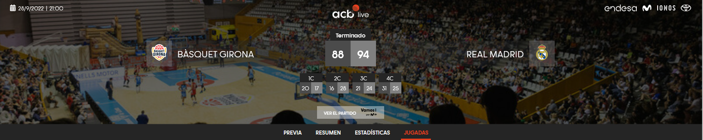

import pandas as pd
import os
from funciones_auxiliares import *
import warnings
warnings.filterwarnings('ignore')
2.4 Descarga de Play by play#
La tabla del Play by play es la tabla de información que se utilizaba habitualmente en los partidos de baloncesto para reflejar las acciones realizadas por los jugadores durante estos en cada momento del partido. A través de este notebook se buscará dar explicación del lugar de donde ha sido extraida la informació como a que información ha sido descargada. Para ello, se estructurará el notebook en los siguiente puntos:
1. Descripción del portal web. Se hará una revisión de la información que es almacenada dentro del portal y se explicará el método de descarga de cada uno de los play by play de cada uno de los partidos.
2. Revisión de información y estructura de los ficheros. Tras la descarga de la información, se hará una revisión de la información individualizada de los ficheros descargados y la revisión conjunta de los ficheros descargados.
A través de esos puntos se realizará la comprensión y entendimiento del trabajo realizado para la descarga de los ficheros referentes al box score.
1. Descripción del portal web y método de descarga#
Para la descarga del Play by play de cada uno de los partidos ha sido utilizado la página web https://jv.acb.com/es/ que como se ha comentado en la sección de la creación del Diccionario de partidos es la página web en la que los aficionados puede ver los resultados y estadísticas de los partidos disputados. Como se mostró durante la creación del diccionario, cada partido disputado tiene una url la cual permite al usuario acceder a las estadísticas del partido. Esta url, está compuesta por el enlace a la página oficial de la jornada virtual de la liga junto a un identificador numérico del partido y la sección que se quiere visitar. Es por este motivo, que para poder acceder al Box Score de cualquier partido la url debe estar compuesta por la url (https://jv.acb.com/es/), el identificador del partido y la sección jugadas.
Teniendo esto presente, se muestra a continuación el partido disputado en la temporada 2022-2023 entre el Básquet Girona y el Real Madrid durante la primera jornada de la temporada a la que se puede tener acceso mediante el enlace https://jv.acb.com/es/103350/jugadas. Dentro de la página web del partido, podemos encontras dos secciones, la primera de ellas es la siguiente:

En esta primera sección podemos encontrar los equipos participantes en el encuentro, la fecha y el resultado del partido junto al tanteo por cuartos. Además, se puede observar como el Box Score se encuentra dentro del apartado Jugadas.
Por otro lado, la segunda sección de la página web es en la que se muestra el Play by play de los equipos. Esta sección es la siguiente:
Esta sección está compuesta por cinco botones los cuales permiten visualizar las acciones realizadas por los jugadores en todo el partido o en algún cuarto del partido en específico. Dentro de las sección de acciones, podemos encontrar como estas están divididas por cajas en las que se muestra la siguiente información:
EQUIPO. Hace referencia al que realizó la acción.
CUARTO. Hacier referencia al periodo del partido en el que se realizó la acción.
MINUTO. Hace referencia al minuto del cuarto en el que se realizó la acción.
Puntos del local. Hace referencia a los puntos anotados por el equipo local en el momento de la acción.
Puntos del visitante. Hace referencia a los puntos anotados por el equipo visitante en el momento de la acción.
NOMBRE. Hace referencia al nombre del jugador que realizó la acción.
ACCIÓN. Hace referencia a la acción que se re
A través del Diccionario de partidos y técnicas de web scrapping que permite la interacción con el navegador y la descargar del código fuente de partidos, han sido descargados todos los Play by play de los partidos recogidos dentro del diccionario. Para esta descarga, ha sido desarrolla el script de código 04_Descargar_Play_By_Play que permite la descarga y almacenamiento de los Play by play de ambos equipos en las rutas establecidas.alizó.loración del jugador.
2. Revisión de información y estructura de los ficheros#
Como ha sido comentado durante el apartado anterior, se ha realizado la descarga de todos los Play by play de los partidos almacenados en el Diccionario de partidos. Es por este motivo que para entender y explicar que información ha sido descargada, se pasa a realizar la carga del primer partido disputado en cada temporada en la primera jornada:
# Ruta para acceder a la información de las jornas de cada una de las temporadas
ruta_jornadas = 'E:/TFM/02. Datos/ACB/JORNADAS'
# Ruta al primer partido de cada temporada
partido_2019 = 'E:/TFM/02. Datos/ACB/JORNADAS/2019/Jornada 1/20190924_Montakit Fuenlabrada_VS_San Pablo Burgos/PBP_Montakit Fuenlabrada_VS_San Pablo Burgos.csv'
partido_2020 = 'E:/TFM/02. Datos/ACB/JORNADAS/2020/Jornada 1/20200919_Acunsa GBC_VS_Real Madrid/PBP_Acunsa GBC_VS_Real Madrid.csv'
partido_2021 = 'E:/TFM/02. Datos/ACB/JORNADAS/2021/Jornada 1/20210918_Coosur Real Betis_VS_MoraBanc Andorra/PBP_Coosur Real Betis_VS_MoraBanc Andorra.csv'
partido_2022 = 'E:/TFM/02. Datos/ACB/JORNADAS/2022/Jornada 1/20220928_Bàsquet Girona_VS_Real Madrid/PBP_Bàsquet Girona_VS_Real Madrid.csv'
# Lectura de un partido de muestra cada temporada
# Lectura de un partido de muestra cada temporada
df_partido_2019 = pd.read_csv(partido_2019, sep=';')
df_partido_2020 = pd.read_csv(partido_2020, sep=';')
df_partido_2021 = pd.read_csv(partido_2021, sep=';')
df_partido_2022 = pd.read_csv(partido_2022, sep=';')
Tras realizar la carga de los cuatro partidos, se pasa a mostrar que información ha sido cargada de cada uno de los Play by play:
# Visualización de columnas de cada dataframe
print("###############################################")
print("# COLUMNAS DEL PLAY BY PLAY EN CADA TEMPORADA")
print("###############################################")
l_col_2019 = [col for col in df_partido_2019.columns]
print("TEMPORADA 2019:",' | '.join(l_col_2019))
l_col_2020 = [col for col in df_partido_2020.columns]
print("TEMPORADA 2020:",' | '.join(l_col_2020))
l_col_2021 = [col for col in df_partido_2021.columns]
print("TEMPORADA 2021:",' | '.join(l_col_2021))
l_col_2022 = [col for col in df_partido_2022.columns]
print("TEMPORADA 2022:",' | '.join(l_col_2022))
###############################################
# COLUMNAS DEL PLAY BY PLAY EN CADA TEMPORADA
###############################################
TEMPORADA 2019: EQUIPO | CUARTO | MINUTO | PTs_LOCAL | PTS_VISITANTE | NOMBRE | ACCION
TEMPORADA 2020: EQUIPO | CUARTO | MINUTO | PTs_LOCAL | PTS_VISITANTE | NOMBRE | ACCION
TEMPORADA 2021: EQUIPO | CUARTO | MINUTO | PTs_LOCAL | PTS_VISITANTE | NOMBRE | ACCION
TEMPORADA 2022: EQUIPO | CUARTO | MINUTO | PTs_LOCAL | PTS_VISITANTE | NOMBRE | ACCION
Como se puede observar, en las cuatro temporadas, todos las tablas de Play by play tienen la información definida anteriormente. Se pasa a continuación a mostrar la información almacenada en el primer partido de la temporada 2022-2023:
print("###############################################")
print("# ANÁLISIS DE PLAY BY PLAY 2022")
print("###############################################")
print("Nº de columnas:", len(df_partido_2022.columns))
print("Nº de registros:", len(df_partido_2022))
print("Cuartos del partido:", ' | '.join(df_partido_2022.CUARTO.unique()))
print("Acciones del partido:", ' | '.join(df_partido_2022.ACCION.unique()))
print("\nPlay by play 2022:")
print(df_partido_2022.head(20).to_string(index=False, col_space=8))
###############################################
# ANÁLISIS DE PLAY BY PLAY 2022
###############################################
Nº de columnas: 7
Nº de registros: 530
Cuartos del partido: 4C | 3C | 2C | 1C
Acciones del partido: Asistencia | Triple anotado | Rebote Defensivo | Triple fallado | Tiro Libre anotado | Entra a pista | Sale de la pista | Falta Recibida | Falta Personal 2TL | Tiro Libre fallado | Falta Personal 1TL | Tiro de 2 anotado | Rebote Ofensivo | Pérdida | Falta en Ataque | Falta Personal | Tiempo Muerto | Tapón | Tapón Recibido | Tiro de 2 fallado | Falta Técnica 1TL | Recuperación | Falta Personal 3TL | Mate | Salto perdido | Salto ganado | Cinco Inicial
Play by play 2022:
EQUIPO CUARTO MINUTO PTs_LOCAL PTS_VISITANTE NOMBRE ACCION
Bàsquet Girona 4C 00:02 88 94 Colom Asistencia
Bàsquet Girona 4C 00:02 88 94 Figueras Triple anotado
Bàsquet Girona 4C 00:09 85 94 Gasol Rebote Defensivo
Real Madrid 4C 00:09 85 94 Musa Triple fallado
Bàsquet Girona 4C 00:28 85 94 Gasol Tiro Libre anotado
Bàsquet Girona 4C 00:28 84 94 Gasol Tiro Libre anotado
Real Madrid 4C 00:28 83 94 Poirier Entra a pista
Real Madrid 4C 00:28 83 94 Cornelie Sale de la pista
Bàsquet Girona 4C 00:28 83 94 Gasol Falta Recibida
Real Madrid 4C 00:28 83 94 Cornelie Falta Personal 2TL
Bàsquet Girona 4C 00:28 83 94 Gasol Rebote Defensivo
Real Madrid 4C 00:28 83 94 Yabusele Tiro Libre fallado
Real Madrid 4C 00:28 83 94 Yabusele Falta Recibida
Bàsquet Girona 4C 00:28 83 94 Miletic Falta Personal 1TL
Real Madrid 4C 00:28 83 94 Yabusele Tiro de 2 anotado
Real Madrid 4C 00:28 83 92 Yabusele Rebote Ofensivo
Real Madrid 4C 00:28 83 92 Hezonja Triple fallado
Bàsquet Girona 4C 00:49 83 92 Colom Tiro de 2 anotado
Real Madrid 4C 01:02 81 92 Cornelie Entra a pista
Real Madrid 4C 01:02 81 92 Tavares Sale de la pista
Como se puede observar, el dataframe cargado consta de 530 registros los cuales dan información a las 7 variables anteriormente definidas. Dentro de cada una de las 7 variables a las que se da información se puede observar como en la variable EQUIPO se indica el nombre del equipo que realiza la acción, en la variable CUARTO se indica el cuarto en el que se produjo la acción, en la variable MINUTO se indica el momento en el que se produjo la acción, las variables PTs_LOCAL u PTs_VISITANTE indican los puntos anotados por ambos equipos, la variable NOMBRE indica el apellido del jugador y la variable ACCION indica la acción que realizó este.
Analizada la información descargada, se pasa a realizar el análisis de volumetrías con respecto a los datos descargados para poder saber el volumen de información con la que se trabajará:
# Se seleccionan los directorios de las jornadas
l_dir_temporada = os.listdir(ruta_jornadas)
# Se inicializan los contadores para el estudio
contador_vacios = 0
contador_nulos = 0
contador_registros = 0
contador_ficheros = 0
contador_partidos = 0
l_acciones = []
l_cuartos = []
for dir_temporada in l_dir_temporada:
ruta_temporada = ruta_jornadas + '/' + dir_temporada
l_dir_jornadas = os.listdir(ruta_temporada)
for dir_jornada in l_dir_jornadas:
ruta_jornada = ruta_temporada + '/' + dir_jornada
l_dir_partido = os.listdir(ruta_jornada)
for dir_partido in l_dir_partido:
# Se extraen los elemenos del partido
ruta_partido = ruta_jornada + '/' + dir_partido
l_elementos_partido = os.listdir(ruta_partido)
# Se selecciona el fichero a cargar y se realiza su carga
pbp_partido = [elem for elem in l_elementos_partido if 'VS' in elem][0]
df_pbp_partido = pd.read_csv(ruta_partido + '/' + pbp_partido, sep=';', encoding = 'latin-1')
contador_vacios = contador_vacios + df_pbp_partido.isna().sum()
contador_registros = contador_registros + len(df_pbp_partido)
contador_ficheros = contador_ficheros + 1
contador_nulos = contador_nulos + (df_pbp_partido == '').sum()
contador_partidos = contador_partidos + 1
l_acciones.extend(df_pbp_partido.ACCION.unique())
l_cuartos.extend(df_pbp_partido.CUARTO.unique())
print("###############################################")
print("# ANÁLISIS DE CONSISTENCIA EN LOS BOX SCORE")
print("###############################################")
print("El número de partidos descargados es:", contador_partidos)
print("El número de ficheros de box score descargados es:",contador_ficheros)
print("El número de registros de box score descargados es:",contador_registros)
print("El número de valores vacíos dentro del dataframe es:\n",contador_vacios)
print("El número de valores nulos ('') dentro del dataframe es:\n",contador_nulos)
print("El número de tipos de cuartos existentes es:",len(set(l_cuartos)))
print("El número de acciones existentes es:", len(set(l_acciones)))
###############################################
# ANÁLISIS DE CONSISTENCIA EN LOS BOX SCORE
###############################################
El número de partidos descargados es: 1192
El número de ficheros de box score descargados es: 1192
El número de registros de box score descargados es: 637317
El número de valores vacíos dentro del dataframe es:
EQUIPO 0
CUARTO 0
MINUTO 0
PTs_LOCAL 0
PTS_VISITANTE 0
NOMBRE 18022
ACCION 0
dtype: int64
El número de valores nulos ('') dentro del dataframe es:
EQUIPO 0
CUARTO 0
MINUTO 0
PTs_LOCAL 0
PTS_VISITANTE 0
NOMBRE 0
ACCION 0
dtype: int64
El número de tipos de cuartos existentes es: 6
El número de acciones existentes es: 50
Como se puede observar, el número de partidos descargados es de 1.192 en el que se almacenan en mismo número de play by plays ya que únicamente se almacena uno por encunetro. Desde de estos ficheros, se almacena información para 637.317 registros en donde únicamente en el campo NOMBRE se encuentran 18.022 elementos vacíos debido a que no todas las acciones son realizadas por los jugadores como pueden ser el cambio de cuartos o los tiempos muertos.
Dentro de los cuartos y las acciones, podemso encontrar diferentes valores, se pasa a mostrar que tiempos de valores pueden encontrarse en cada uno de los campos:
print("##############################")
print("# VALORES EN VARIABLE CUARTOS")
print("##############################")
print(' | '.join(set(l_cuartos)))
print("\n##############################")
print("# VALORES EN VARIABLE ACCION")
print("##############################")
l_acciones = list(set(l_acciones))
print(' | '.join((l_acciones[0:10])))
print(' | '.join((l_acciones[11:20])))
print(' | '.join((l_acciones[21:30])))
print(' | '.join((l_acciones[31:40])))
print(' | '.join((l_acciones[41:50])))
##############################
# VALORES EN VARIABLE CUARTOS
##############################
PR1 | PR2 | 4C | 1C | 2C | 3C
##############################
# VALORES EN VARIABLE ACCION
##############################
Pérdida | Recuperación | Falta Personal 1TL | D - Descalificante - 2TL | Cinco Inicial | Pérdida | Falta Personal 2TL | Triple fallado | Falta Antideportiva 1TL | D - Descalificante - No TL
Tiro de 2 anotado | Tapón | Técnica al Banquillo | Tapón Recibido | Falta Antideportiva 3TL | Técnica al Entrenador (2TL) | Falta Técnica 2TL | Salto ganado | Falta Personal 3TL
Falta Recibida | Falta Antideportiva | Asistencia | Técnica al Banquillo (1TL) | Tapón Recibido | Falta en Ataque | Falta Técnica 1TL | Falta Técnica | Falta Personal
Técnica | Tapón | Entra a pista | Rebote Ofensivo | Rebote Defensivo | Técnica al Entrenador | Tiro Libre anotado | Técnica al Entrenador (1TL) | Tiro Libre fallado
Salto perdido | Recuperación | Técnica al Banquillo (2TL) | Descalificado del partido | Altercado no TL | Tiempo Muerto | Falta Antideportiva 2TL | Mate fallado | Sale de la pista
Como se puede observar, existen cuatro elementos que hacen referencias a los cuartos (1C, 2C, 3C y 4C) y dos elementos que hacen referencia a las prórrogas (PR1 y PR2). Por otro lado, con respecto a las acciones, existen diferentes tipos de acciones que hacen referencia a diferentes situaciones del juego que se pueden dar durante los partidos de baloncesto. Estas acciones pueden ser englobadas en los siguientes grupos:
Acciones de tiro: Tiro de 2 fallado | Tiro de 2 anotado | Mate | Triple fallado | Triple anotado | Mate fallado | Tiro Libre anotado | Tiro Libre fallado
*Acciones de control de balón:*éP�rdida | Recuperaói�n | Recuperación | Tapón Recibido | Asistencia | Pérdida | Tapón | Tóp�n | Tóp�n Recibido
Acciones de rebote: Rebote Defensivo | Rebote Ofensivo
Acciones de falta: Técnica al Banquillo (1TL) | Falta Personal 3TL | D - Descalificante - No TL | Falta Personal | Técnica al Banquillo (2TL) | Falta Personal 2TL | Falta Antideportiva 1TL | Falta Antideportiva 3TL | Técnica al Banquillo | Falta Recibida | Técnica al Entrenador (2TL) | Técnica al Entrenador | Falta Técnica | Falta en Ataque | D - Descalificante - 2TL | D - Descalificante - 1TL | Falta Personal 1TL | Falta Antideportiva | Falta Técnica 2TL | Técnica al Entrenador (1TL) | Técnica | Altercado no TL
Acciones del juego: Entra a pista | Tiempo Muerto | Salto perdido | Salto ganado | Cinco Inicial
A partir de estas agrupaciones se puede dividir las acciones en función de la finalidad que tenga cada acción. Como punto a tener en cuenta en el trabajo que se realice sobre las acciones, se tendrá que analizar las acciones de control de balón en el que habrá que procesar las pérdidas y recuperaciones ya que existen diferencias en su formato.formato.